Placas de rama TriLock
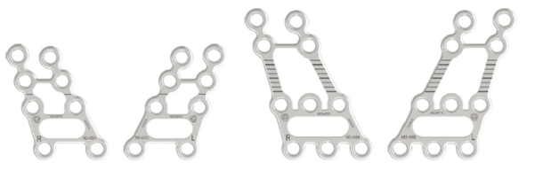
M2-4053 · M2-4054 · M2-4055
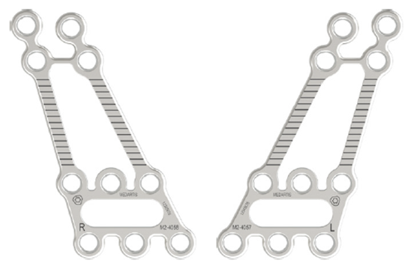
M2-4056 · M2-4057 · M2-4058
MODUS 2 — Ortognática / Placas de rama
46
Placas del mentón
Prefabricadas en 0,7, 0,8 y 0,9 mm — versión rígida disponible.
0,7 mm
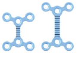
M2-4047
0,8 mm
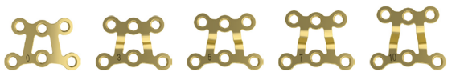
M2-4048
0,9 mm
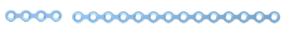
M2-4049
Rejilla
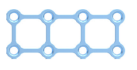
M2-4050
MODUS 2 — Ortognática / Placas del mentón
47
Placas ortognáticas estándar
Para osteosíntesis en osteotomías LeFort I, II y III. Placas rectas, en Y y de rejilla.
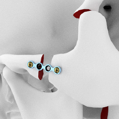
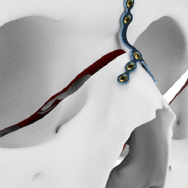
MODUS 2 — Ortognática / LeFort
48
Barras deslizantes
⎼Ajuste intraoperatorio de la oclusión
⎼Disponible en Ø 2,0 y 2,3 mm
⎼Importante: la barra deslizante debe retirarse después de la fijación de la placa.
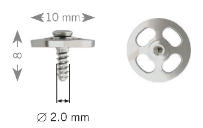
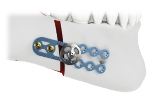
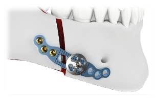
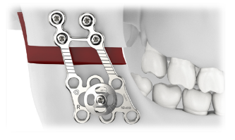
MODUS 2 — Ortognática / Barras deslizantes
49
Visión general de los tornillos — Ortognática
HexaDrive 4 en los diámetros finos; HexaDrive 6 desde 2,0 mm.
TornilloDiámetroInterfaz
Tornillo Cortical 1.2Ø 1,2 mmHexaDrive 4
Tornillo Cortical 1.5Ø 1,5 mmHexaDrive 4
Tornillo Cortical 1.8Ø 1,8 mmHexaDrive 4
Tornillo SpeedTip 1.5Ø 1,5 mmHexaDrive 4
Tornillo Cortical 2.0Ø 2,0 mmHexaDrive 6
Tornillo Cortical 2.3Ø 2,3 mmHexaDrive 6
Tornillo TriLock 2.0Ø 2,0 mmHexaDrive 6
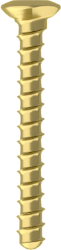
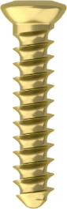
MODUS 2 — Ortognática / Tornillos
50
Innovación en tornillos corticales
Eje cónico
El eje afilado reduce el torque de inserción en hueso homogéneo — una sola broca sirve para todas las longitudes de tornillo.
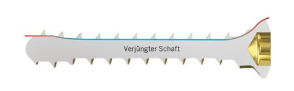
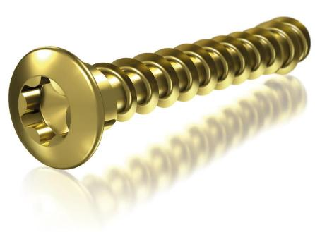
MODUS 2 — Tornillos / Eje cónico
51
Innovación en tornillos corticales
Extensión roscada
La rosca bajo la cabeza del tornillo permite un torque de apriete mayor y reduce el riesgo de apriete excesivo en hueso fino.
TornilloGanancia de torque
Cortical 1.2+80 % (0,06 Nm)
Cortical 1.5+60 % (0,08 Nm)
Cortical 1.815 × (0,11 Nm)
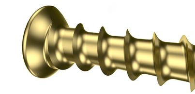
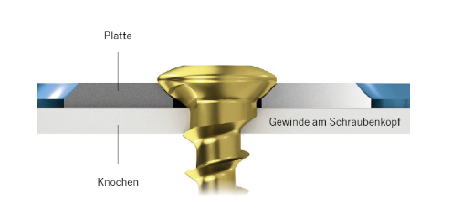
MODUS 2 — Tornillos / Extensión roscada
52